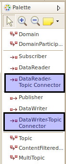

Connecting DataReader/DataWriter to Topics
Currently connector tools on the palette must be used to
connect a DataReader or DataWriter to a Topic. The steps to make
a connection are
- Select the appropriate connector from the palette.
- Click on the DataReader/DataWriter.
- For a DataWriter click on its associated Topic, MultiTopic, or ContentFilteredTopic figure.
For a DataReader click on its associated Topic figure.
